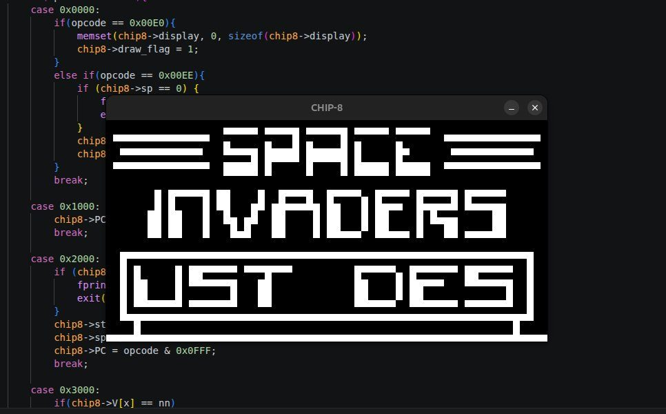
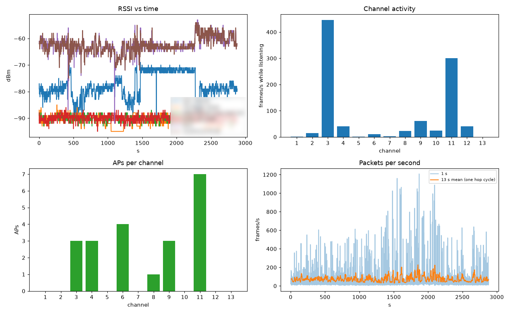
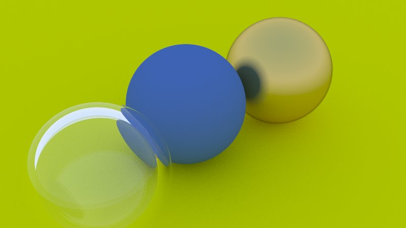
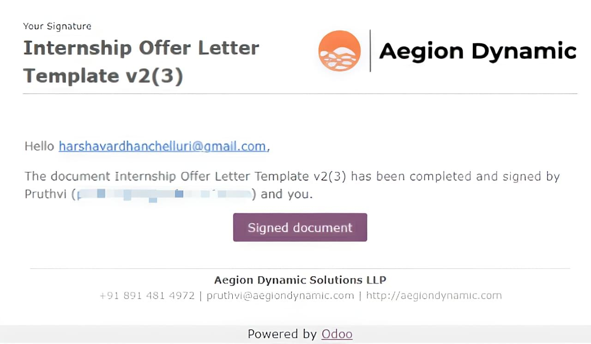
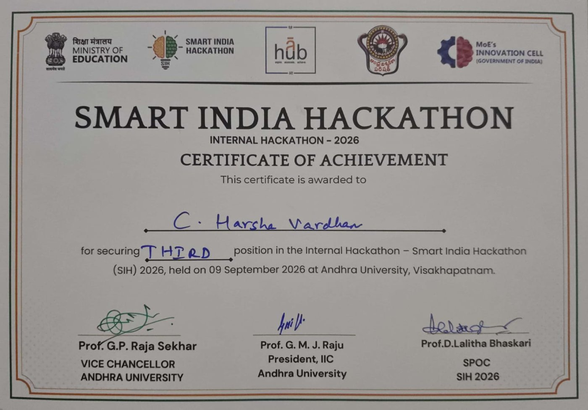
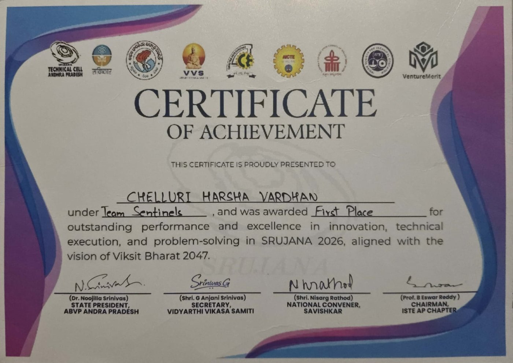

USER_PROFILE
I AM CHELLURI HARSHA VARDHAN.
ENGINEERING STUDENT FOCUSED ON LOW-LEVEL SYSTEMS, EMBEDDED TECH AND ROBOTICS.
[INIT] Loading core_values...
[LOG] Exploring the interaction of hardware and software
[LOG] Bridging the gap between hardware and software.
[STATUS] READY
ANDHRA UNIVERSITY
B.Tech in Computer Science Engineering
relevant_coursework.manifest
Languages
Embedded & IoT
Libraries
Tools
Active_Builds
Flight Controller
A flight controller built from the ground up: register-level drivers, RTOS scheduling, state estimation and hand-built hardware. Prototyped on the RP2040 (Pico W), moving to the STM32F411.
- 0x01 Bare-metal C drivers for GPIO, UART, SPI, I²C, timers and RTC, with custom startup code and linker scripts.
- 0x02 FreeRTOS SMP on the RP2040: sensor task pinned to core 1, reporting isolated on core 0.
- 0x03 IMU, barometer and magnetometer fused through a hand-tuned Kalman filter.
- 0x04 Hand-soldered prototype, debugged with ST-Link, multimeter and oscilloscope.
next
DMA sensor reads · PID attitude control · DShot600 · STM32F411 port
case_study // 100 Hz loop jitter
Does the sensor loop really hold its 10,000 µs period under vTaskDelayUntil? 1,000 consecutive intervals timed with time_us_64():
| metric | I²C @ 100 kHz | I²C @ 400 kHz |
|---|---|---|
| min | 3,390 µs | 9,095 µs |
| max | 10,098 µs | 10,201 µs |
| average | 9,992 µs | 9,989 µs |
| outliers | 1 / 1,000 | 0 / 1,000 |
finding: blocking I²C reads at 100 kHz occasionally overran the period, forcing a 3,390 µs catch-up interval.
fix: raising the bus to 400 kHz cut read overhead and removed the outliers.
CHIP-8 Emulator
A fully functional CHIP-8 interpreter built in C from scratch. Implements the complete fetch-decode-execute cycle with bitwise opcode handling, memory architecture, display rendering, and keyboard input.
- 0x01 Precise bitwise operations for instruction decoding.
- 0x02 Synchronized timers & sound cycle management.
- 0x03 Virtual keypad mapping for modern HID inputs.


ESP32-C3 Wi-Fi Analyzer
A 2.4 GHz Wi-Fi environment analyzer on the Seeed XIAO ESP32-C3. It hops across channels, parses raw 802.11 frames in promiscuous mode and streams per-AP stats to Python host tools.
wifi → promiscuous cb → lock-free SPSC ring → analyzer task → CRC-framed USB → decoder.py → SQLite
measured // one 48-min capture

Ray Tracer
A path tracer written from scratch in C++17, following Peter Shirley's Ray Tracing in One Weekend.
- 0x01Lambertian, fuzzy metal and glass (refraction, Schlick reflectance).
- 0x02Antialiasing, recursive bounces, gamma correction.
- 0x03Positionable camera with thin-lens depth of field.
user@harsha:~$ ls projects/
emulator_c/ flash_bot/ flight_controller/ ray_tracer/ wifi_analyzer/
user@harsha:~$ cat ray_tracer/ROADMAP.md
[x]01 Ray Tracing in One Weekend
C++17, done Oct 20–26
[ ]02 Multithreading
std::thread, benchmarked against the single-threaded build
[ ]03 Ray Tracing: The Next Week
BVH, quads, lights + Cornell box, instances, checker textures
[ ]04 My additions
Möller–Trumbore triangles + .obj models, SAH BVH (Wald 2007)
[ ]05 CUDA port
CPU vs GPU benchmarks; GPU traversal (Aila & Laine), GPU BVH build (Karras)
[ ]06 Ray Tracing: The Rest of Your Life
rendering equation (Kajiya), importance sampling, MIS (Veach & Guibas)
[ ]07 Optional
GGX microfacets for rough metal and frosted glass
[ ]08 Later
ReSTIR, 3D Gaussian Splatting
// every speedup benchmarked on the same scene + settings
user@harsha:~$
Flash_Bot
An open-source CLI that automates the firmware loop: plug in a board and it identifies it, picks matching firmware, builds it with arduino-cli or PlatformIO, uploads, verifies over serial and records the result. Works with AVR, ESP32, RP2040, SAMD, Renesas, Teensy and STM32.
-
0x01
Unattended flashing-station mode with parallel flashing across boards (
--auto --jobs N), runnable under systemd. - 0x02 Hardware-independent state machine (build → flash → test → record) with injected flasher and tester, so unit tests cover every failure path.
- 0x03 SHA-256 build cache per sketch and board, per-sketch serial test suites, SQLite history.
- 0x04 GitHub Actions CI runs the tests on Python 3.10–3.13 and builds firmware; JSON and JUnit XML results.
user@harsha:~$ flashbot run --auto --jobs 2
[uno_r4] Arduino Uno R4 WiFi /dev/ttyACM0 2341:1002
[esp32s3] ESP32-S3 /dev/ttyACM1 303a:1001
[uno_r4] build ........ cached (sources unchanged)
[esp32s3] build ....... OK (platformio)
[uno_r4] upload ....... OK
[esp32s3] upload ...... OK
[uno_r4] test ping ..... PASS PONG
[esp32s3] test ping .... PASS PONG
[sqlite] 2 runs recorded DONE
user@harsha:~$
PROFESSIONAL_JOURNEY
Compiling professional milestones and technical achievements. High-rigor engineering focus in robotics, AI, and systems architecture.
AEGION DYNAMIC SOLUTIONS
VISAKHAPATNAM, INRobotics internship spanning simulation and embedded firmware: an autonomous robot vacuum built end to end in ROS2/Gazebo, and the firmware for a railway relay test rig.
- > Engineered a simulated autonomous robot vacuum: a custom Python perception script scans and maps the room in real time, bridged with ROS2 and Gazebo for navigation, coverage path planning and obstacle avoidance.
- > Led firmware for an ESP32-powered tester for QN1-series railway relays: an 18-point electrical & timing suite (coil resistance, pickup/drop voltage, contact gap & resistance, bounce, transfer time, insulation, reverse polarity) with live results on an HMI touchscreen.

SMART INDIA HACKATHON 2026
DRONE_SURVEY_SIM
Secured 3rd position in the Internal Hackathon of Smart India Hackathon 2026, held on 9 September 2026 at Andhra University, Visakhapatnam.
- > Autonomous drone survey missions over Gazebo models of Visakhapatnam buildings.
- > Mission planning, point-cloud accumulation and digital surface model (DSM) generation, fully containerized.
SRUJANA 2026
OFFLINE_AI_ASSISTANT
Won 1st place at the state-level hackathon (SVPEC Visakhapatnam, Technical Cell AP) as Team Sentinels, with an offline, multilingual AI assistant that has a customizable avatar and a physical robot body.
- > Competed against 150+ state-level teams.
- > Fine-tuned on custom Telugu datasets for English + Telugu voice chat.
PMSS Scholarship Recipient
CORE_TECH_STACK
OPEN_CHANNEL
[NOTICE] All communication channels are monitored.
[NOTICE] Response time: < 24 hours.
[STATUS] AVAILABLE_FOR_HIRE